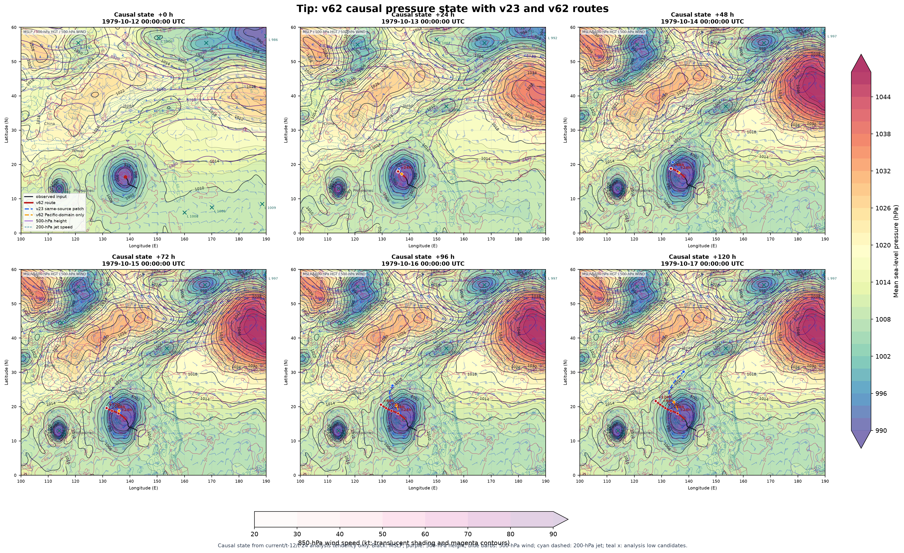

Tip: v23 versus v62 public-data causal comparison
Issue time: 1979-10-12T00:00:00Z | same public causal analysis source for every route
Data boundary. No future observation, positive-lead weather field, JMA/JTWC forecast, or other model forecast was passed to inference. The v62 pressure image is the causal state background; v23 supplies only a track route because it was not trained to emit a full pressure grid.
Route comparison
| Route | +120 h endpoint | Verification |
|---|---|---|
| v23 same-source patch | 30.21N, 138.05E | MAE 581.5 km; +120 h 1388.6 km |
| v62 Pacific-domain only | 21.33N, 134.47E | MAE 388.4 km; +120 h 659.5 km |
| v62 full local + Pacific | 21.67N, 127.79E | MAE 141.2 km; +120 h 37.0 km |
Pressure-state map
The map below is rendered from v62's whole-domain analysis-tendency state. It contains 2-hPa MSLP contours, 500-hPa height and wind, 850-hPa wind structure, and the three route lines.

Reproduction contract
NOAA CFSR historical analysis at and before the issue time plus the IBTrACS track history through the issue. Later IBTrACS rows are verification truth only. CFSR is a public downloadable analysis/reanalysis source suitable for a GitHub Actions replay.